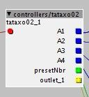
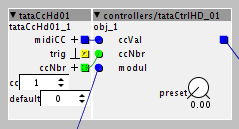
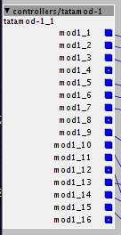

Hi all axoloti lovers,
I'm currently facing some problems regarding the use of SRAM. I'll explain my problem in this first paragraph, and then I'll detail my objects afterwards if you're interested.
I am setting up a workflow with 3 parts:
- the Axoloti, with a display, four potentiometers and two extra buttons to change presets.
- a Faderfox EC4 midi controller that I use to control the necessary parameters
- Bitwig running on a Surface Pro that allows me to send modulations to the axoloti (and generate sound/fx, but not important here).
To achieve this, I had to make some custom objects, mainly subpatches, or sometimes by coding/modifying objects directly, but my coding skills are relatively limited.
All these objects consume a lot of ram and leave very little room for the rest. I hadn't anticipated this, unfortunately.
So I was wondering: Does coding "native" objects use a lot less resources than subpatch objects?
For those who are interested, here are the custom objects. I also put the result of this workflow at the end with an example of a patch using the DX7 object made by sss:
subpatch 1: axoloti physical interface
Role:
- send information to the screen (scope + name of the current patch and preset number)
- retrieve the values of the analog buttons
- retrieve the values of the buttons preset and patch changes

subpatch 2: midi cc interface (sd or hd version for 14 bits nrpn)
An instance of this object has to be created for each parameter I want to control. I can choose between an "SD" version for standard 7bits midi cc or an "HD" one for 14 bits midi.
Role:
- retrieve midi values (sd or hd)
- retrieve the modulation value
- retrieve the preset value
- if the preset value changes, send this value back to the Faderfox EC4
- smooth these values

subpatch 3: Getting modulations values from Bitwig
I use Bitwig to modulate the parameters that are accessible from the Faderfox. So I need this object for each pages of the Faderfox.
Role:
- retrieve modulation values via specific CCs
- smooth these values
- centralise all the modulations in a single object

Result:
Full setup:
FM Patch
(here I cannot add the second "modulation" object for the second voice due to the lack of ram)
Faderfox EC4 page for the first voice
Modulations in Bitwig for the forst voice
The number in white below the CCs corresponds to the button number on the Faderfox EC4 (from 1 to 16)
Thanks if you have read this far, and sorry for the long message!


{kind=link}
{kind=link}
{kind=link}
{kind=link}
{kind=link}
{kind=link}
{kind=link}
{kind=link}